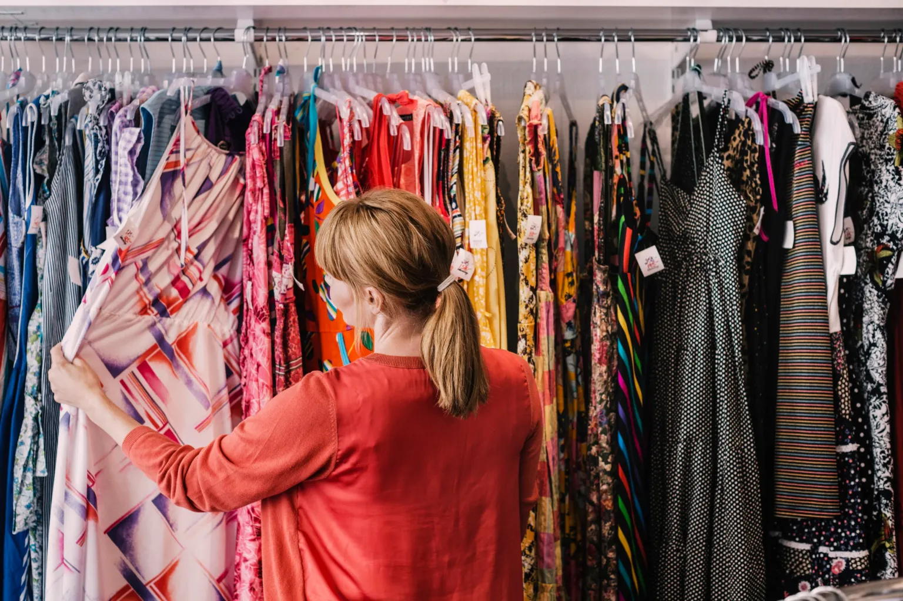
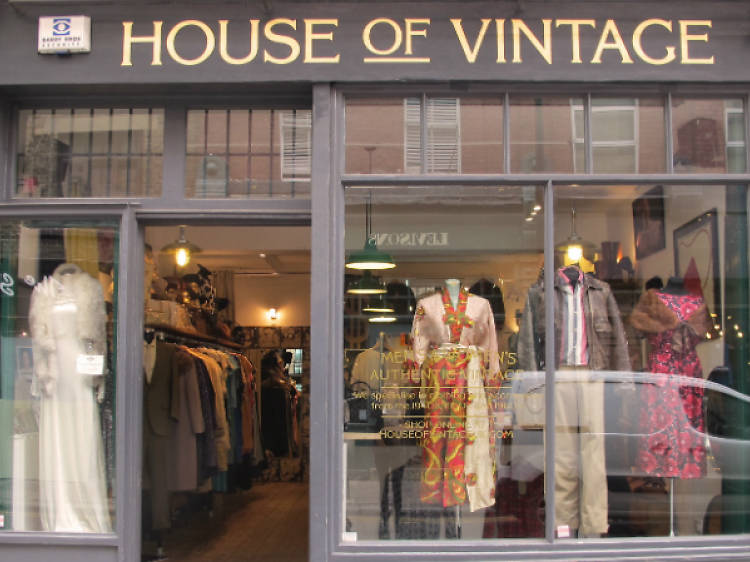
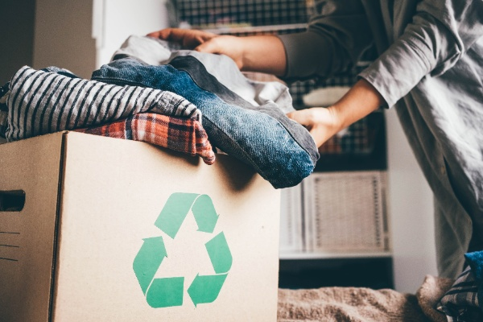
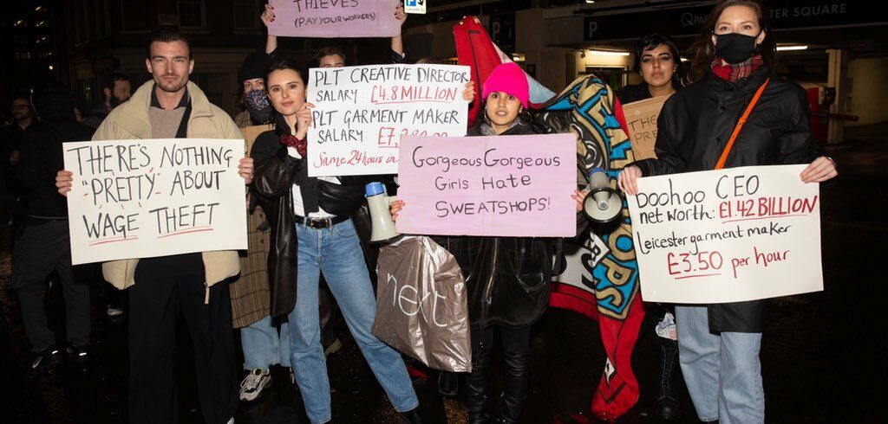

“If you pay a little more, we can live a little better.”
- Sharti Atka, garment worker from Bangladesh.
HOW YOU CAN HELP?
Enhance Your Understanding
Introduce yourself by investigating the various consequences of rapid fashion, such as environmental degradation, labour exploitation, and societal ramifications. Consult a variety of materials, such as films and documentaries, books, online articles, and educational platforms, to gain a comprehensive grasp of the fashion industry's sustainability challenges. Investigate sustainable fashion concepts such as the use of environmentally friendly materials, adherence to ethical labour standards, and open supply chains, as many companies fail to follow sustainable norms when advertising their brand. Participate in online networks and forums devoted to discussing sustainable fashion, fostering learning, and exchanging knowledge with people who share your passion.
To increase your knowledge about the misconduct in the fashion industry press on the link below which will direct you to an online forum, giving you daily updates through news letters, podcasts and many more
The Sustainable Fashion ForumBuy Less, Choose Well
Reassess your shopping patterns and priorities to make the transition from impulse buying to thoughtful consuming. Change your focus from quantity to quality, recognising the long-term worth of each purchase. Prioritise long-lasting, well-made clothing over passing trends, taking into account the craftsmanship and adaptability of each piece. Calculate the cost-per-wear to determine the true value of clothing items and make informed decisions that are consistent with your ideals. Embrace minimalism by creating a wardrobe of basic, timeless pieces that represent your personal style while also contributing to a more sustainable living.
To know more about how to Embrace Minimalism press this button below that says 'Embrace Minimalism'
Support Sustainable Brands & Secondhand Shopping
To reiterate from enhancing your understanding.Explore fashion brands that value sustainability, ethics, and transparency. Conduct extensive research to find brands that value environmentally friendly materials, ethical labour methods, and transparent supplier chains. Certifications and endorsements from recognised organisations are good indicators of a brand's sustainable credentials. Support local and independent designers who provide distinctive, handmade alternatives to mass-produced clothing while minimising environmental effects. Advocate for greater openness in the fashion sector, asking firms to share details about their sustainability plans and practices.
Secondhand Shopping
Embrace the lure of secondhand shopping as a more sustainable alternative to rapid fashion. Explore thrift stores, consignment shops, flea markets, and internet marketplaces for pre-loved apparel gems. Experience the thrilling experience of discovering hidden gems and vintage pieces with character and history. Extend the lifecycle of clothing by purchasing lightly worn products, lowering the need for new production and minimising waste. Clothing swaps with friends, family, or community groups can help you freshen your wardrobe while also building a sense of camaraderie and connection.
Engage in Clothing Rental or Exchange
Exploit the sharing economy by investigating clothes rental businesses and online platforms that provide access to a changing wardrobe of designer things for special events. Enjoy the freedom and variety of renting clothes without the commitment of ownership, while reducing waste and environmental effect. Organise garment exchanges with friends, relatives, or colleagues to exchange lightly used goods and revitalise your wardrobe. Participate in community swap events or clothing exchange parties to meet like-minded people and support circular fashion efforts. Share your positive experiences with clothes rental and exchanging to encourage others to adopt more sustainable consumption methods.
Mitigate Textile Overconsumption
To ensure clothing disposal is carried out appropriately, donate gently used clothing to local organisations, shelters, or thrift stores. Sort clothing items according to their condition and quality, reserving damaged or excessively worn garments for recycling or upcycling. Investigate textile recycling programmes and drop-off places in your area that take clothing and fabric remnants for reuse as new materials. When possible, avoid dumping clothing in landfills, taking into account the environmental and social implications of textile waste on global ecosystems and communities. Workshops, seminars, and community awareness activities can help you and others learn about the importance of textile recycling and waste reduction.
Embrace Minimalism
To embrace minimalism principles in your wardrobe, declutter and simplify your clothes collection to focus on necessities and timeless pieces. Adopting a "less is more" mindset and avoiding impulse purchases motivated by trends or marketing hype are examples of mindful consumption. Invest in high-quality, multifunctional clothing that complements your personal style and is built to last. In your clothing choices, prioritise functionality, durability, and comfort, choosing pieces that serve numerous purposes and complement your lifestyle. Investigate minimalist fashion ideas and styling approaches to express your personality while reducing waste and environmental effect. Cultivate a sense of gratitude and contentment with what you already have, recognising the importance of simplicity and intention in your fashion journey.
Spread Awareness
Leverage your platform and voice to raise awareness about the environmental and social consequences of rapid fashion, as well as the value of sustainable consumption and production. To reach a larger audience, share articles, infographics, videos, and other educational tools about sustainable fashion via social media platforms, blogs, and online forums. Organise events, workshops, and community gatherings around sustainable fashion, such as clothes swaps, repair cafés, and eco-fashion shows. To amplify your message and reach new audiences, work with influencers, content creators, and activists who are committed to sustainability and social justice. Advocate for sustainability education and awareness efforts in schools, universities, and community organisations, so that future generations may make educated decisions and create positive change in the fashion business.
Insider Scoop
Brands that support Fast Fashion
| Zara | Zara, a Spanish fast fashion company, was first mentioned in the 1990s for its 15-day turnaround time. Today, it produces over 450 million clothing items daily, making it one of the fastest clothing turnovers in the industry. |
| H&M | H&M, the world's second-largest fashion retailer, is known for its textile waste, rapid clothing turnover, and unsustainable practices, including harmful chemicals and inhumane working conditions. With over 5,000 stores worldwide, the company faces accusations of inhumane working conditions. |
| Forever 21 | Forever 21, an American clothing company, produces primarily synthetic fabrics, causing significant textile waste and pollution. The company also underpays workers, with some earning as little as $4 an hour, and has been sued for violations. Additionally, the company failed to sign the Bangladesh accord for worker safety and rights. |
| Uniqlo | Uniqlo, a Japanese fast fashion company with over 3,000 stores worldwide, uses cheap synthetic materials like rayon, polyester, nylon, and elastane, contributing to plastic and microfibre pollution. The company lacks certification for textiles and has faced labor rights violations, including withholding $5.5 million in severance pay. |
| Shein | Shein, a popular fast fashion company, has become a major contributor to textile and environmental pollution. The Chinese company sells over 36 million pounds of goods annually and faces copyright infringement issues. To combat negative publicity, Shein launched the "Our Products/Our Planet" campaign, promising 50-100 items per product and only large-scale production when high demand occurs. Chinese online retailer has been questioned by labor watchdogs for claiming factory conditions are certified by international labor standards bodies, despite its low clothing prices. |
| Mango | In 2013, a Bangladesh garment factory collapsed, killing over 1,000 workers and injuring 2,400 more. Only nine companies offered compensation, and Mango was not among them. The tragedy led to the creation of the Bangladesh Accord, a global agreement for victims of such accidents. |
| ASOS | ASOS, a British online retail platform, offers over 850 brands and 7,000 new products and styles weekly to keep up with trends. Its fast fashion business model relies on rapid production of low-quality clothing, which has been criticized for not fitting the way they are advertised. ASOS is popular with younger shoppers due to its fast fashion approach. |